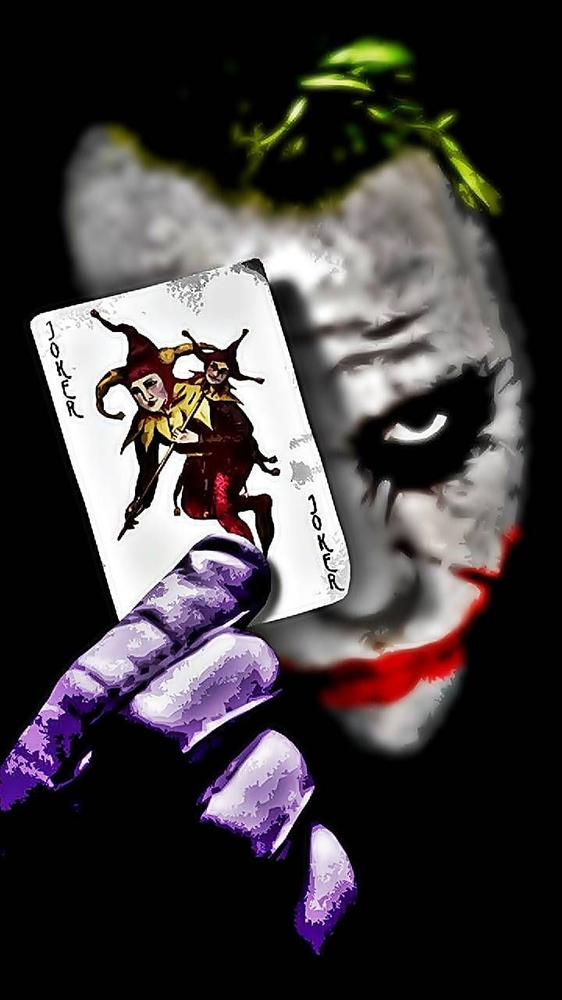

Missions

Joker
The Joker is the most iconic antagonist in the Batman universe, serving as the "Clown Prince of Crime" and the Dark Knight's ultimate psychological foil. He is characterized by his chaotic nature, white skin, green hair, and a permanent, maniacal grin.

Bane
The man who famously "Broke the Bat." Bane isn't just a brute with super-strength (thanks to the steroid Venom); he is a tactical genius and one of the few villains to deduce Batman's secret identity on his own.

ScareCrow
A former psychologist who uses a specialized Fear Toxin to hallucinate his victims' worst nightmares. He doesn't want to rule Gotham; he wants to turn it into a living experiment of terror.

Ra Al Ghul
The immortal leader of the League of Assassins. He views Batman as his only worthy successor. Unlike street criminals, Ra's operates on a global scale, seeking to "purify" the Earth by wiping out most of humanity.

Penguin
The Joker is the most iconic antagonist in the Batman universe, serving as the "Clown Prince of Crime" and the Dark Knight's ultimate psychological foil. He is characterized by his chaotic nature, white skin, green hair, and a permanent, maniacal grin.

Joker
The Joker is the most iconic antagonist in the Batman universe, serving as the "Clown Prince of Crime" and the Dark Knight's ultimate psychological foil. He is characterized by his chaotic nature, white skin, green hair, and a permanent, maniacal grin.